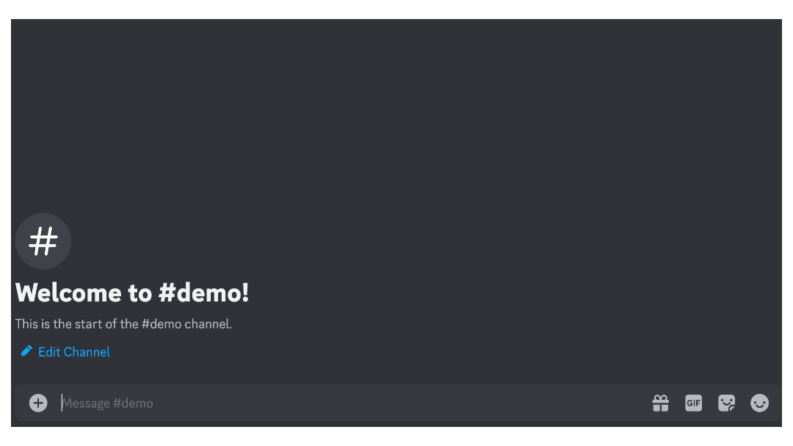

Description and Motivation
I created an application which allowed users to find cheap flight offers. This was set up with a NodeJS backend that called on the Amadeus API for flight information, and using Discord as a chatbot interface. This came from a curiousity to work with Discords bots, as they have a very large presence on Discord for a large variety of uses.
Learnings
This application was formed at a time where API's were no longer as easily accessible to hobbyist developers. Many free tiers for API access were removed. Finding travel API's was also very challenging, as trusted brands such as Expedia either didn't have readily accessible API's or were only making them available through applying for partnerships. I was fortunate in finding the Amadeus API to suit my use cases.
Working with the Discord API could definitely be challenging at times. Navigating the documentation was tricky, as it could get very dense. Still, getting exposed to Discord bots proved beneficial, as it can be a good candidate for a user frontend instead of creating a full user interface.